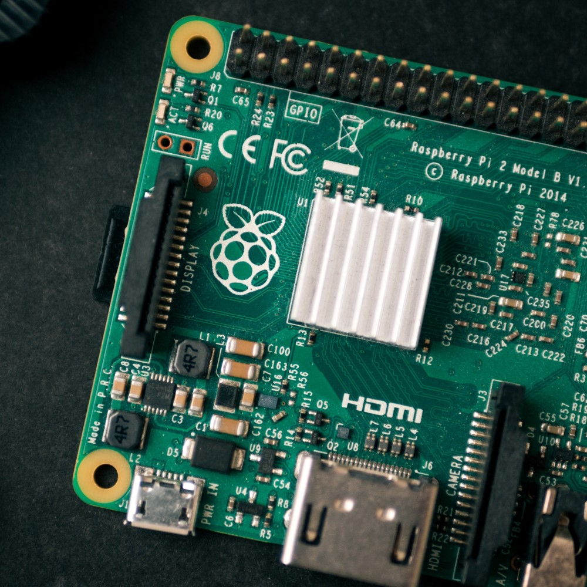

CoderDojo is an international organisation, introducing children to coding and technology all around the world.
Each session is a free and fun opportunity to learn about programming, and to build something cool!
The latest news and announcements from the Bishops Cleeve CoderDojo can be found on our Facebook page. Please follow us there to keep up to date.
-

Learn to code with Scratch
Scratch is a tool for building your own games and animated stories. The simple drag and drop interface makes it easy to bring ideas to life, and helps teach the building blocks of programming.
-
Build Websites & Apps
When you're ready for something more advanced, try building your own website or app. This could be a game, something more practical, or anything you can imagine!
-

Hardware & Robotics
In future Dojo sessions, we will look at using code outside of our laptops, to create things like robots and musical instruments.
If you'd like to see the sorts of things we build (or if you'd like to give them a try outside of the Dojo) click this button to find instructions for hundreds of examples!
Frequently Asked Questions
Does CoderDojo cost anything?
The Dojo is free to attend, and will always be.
Do I need to bring anything?
.
Do I need to attend all the sessions?
No, CoderDojo is not a formal course. It's absolutely fine to come along whenever you can, and it doesn't matter if you miss a week (or longer!)
Do I need any coding experience?
Not at all, our mentors will be there to help you get started. If you would like to do some preparation before your first session, we recommend this video introduction to the Scratch programming tool.
Tobyfield Rd, Bishops Cleeve, Cheltenham GL52 8NN
The Bishops Cleeve CoderDojo is run by a group of local volunteers, with many years of technology experience between them.
To ensure the safety of attendees, all our mentors are background checked (DBS).
If you'd like to volunteer to help out, please give us a shout! We're always in need of an extra hand, and you don't need to be a technical expert.